|
|
|
Второе закрытие зимнего сезона на
Тальцинском, Вроде бы уже закрыли сезон и в мае, и в начале июня на Ульзыхе, но снег в горах все еще не растаял, а в электричках все еще попадаются люди с досками и лыжами. Потому как - Never Summer, лета не будет :) Доехал утром на электричке до родного Выдрино и побежал догонять группу ангарчан, которые должны были еще ночью заехать на Теплые озера. Вышел на лесную тропу, увидел свежие следы на раскисшей глине - ладно, догоним! После Обзорной поляны попал в хороший дождик, промок насквозь, несмотря на дождевик. Ангарчане пониже Бабы уже растягивали палатки, но оказалось, что это не те, кого я догонял! И на верхнюю стоянку никто не проходил, сказали они. Вот те на, опять в одного заходить. Ну и ладно, народ все равно попозже подойдет, без компании не останусь. Потопал дальше, на верхнюю стоянку сноубордистов. Возле знакомой каменной глыбы, под нудным и холодным дождем
натянул палаточный тент, переоделся в сухое. Все-таки случаи замерзания
туристов летом на Хамар-Дабане имеют место быть - промокнул под дождем,
ноль градусов и заледенел! Дело серьезное... Кое-как развел костер,
покушал. Смотрю - гости идут, два сноубордиста, тоже промокли. Познакомились,
Макс и Андрей. Дождь кончился, пасмурно. Парни поставили рядом палатку,
а я пошел немного катануть. Траверсом по северному склону доехал почти
до Бабы, правда в конце пути прокосячил - переходил сланник и сорвался
на твердом снегу на крутом склоне, доска укатилась до самого низа и
застряла в куче лавинного мусора, а я решил ее путь не повторять - проехав
на пятой точке несколько метров, ухватился за кусты :) Опасно, блин! 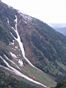 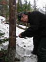 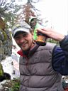 А на утро было холодно и совсем не хотелось вылезать из теплого спальника. Где-то к обеду повылазили из палоток и обнаружили свежий СНЕГ ! Вот те на ! Быстро собираемся и лезем в цирк. А там 10 см мягкого снежка. Не пухляк конечно, но для июня - подарок :) Парни катанули с Шаман-горы и полезли прямо вверх, а я решил по северному гребню прогуляться. Там стланника многовато, замучался через него перелазить. Народ в соседнем, малом цирке гуляет, с лыжами и без. 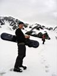 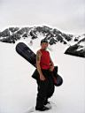 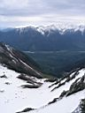 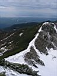 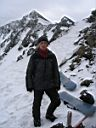 Погода немного странная - над Байкалом и по берегу солнце светит, на юге Хамар-Дабана тоже, а по центру горного хребта - сплошные тучи. Очень странно. Хочется немного позагорать, а тут холодина... Зато покатались отменно, попрыгали с гребня, козырьков уже нет. Свежий снежок на склоне держится хорошо, скольжение отличное. На вершину не ходили - я там был в мае, а парни не захотели. 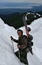 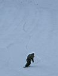 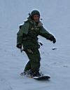 Выкатывали вниз до самых палаток, правда на последней
стометровке приходилось повыеживаться - перепрыгивать через ручей, с
одного островка снега на другой, по бревнам джибить :) А на завтра было солнце, катуха и черемша :) ... читайте окончание ...
Июнь, ноябрь 2006. Белокрылов А.Ю. Слюдянка. |
На заходе:
День второй, снежный:
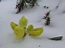 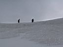 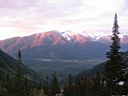
|